GT audit: candidates for human review
Left: verified photograph. Right: all target GT masks. Colours: 14 red, 38 cyan, 75 yellow, 113 purple. Unexpected IDs white. No prediction masks, corrections or annotation clicks shown.
This is a limited preview of the full queue in review_queue.csv. A suspicious component may be a valid bird part. A clean scan does not certify identity consistency.
GT00001: GT 75, previously_reported_case, video 663–663
Video 663
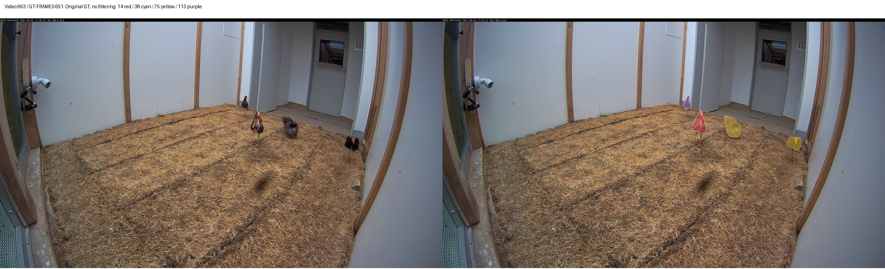
GT00002: GT 75, multiple_substantial_regions, video 650–676
Video 650
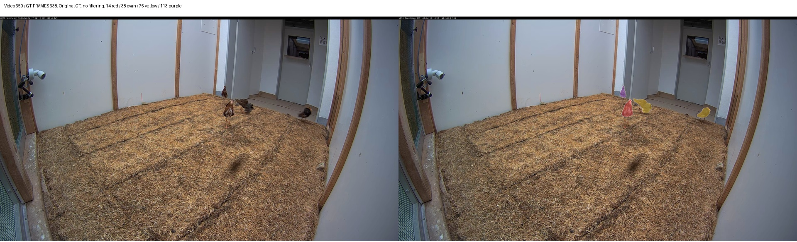
Video 663
Video 676
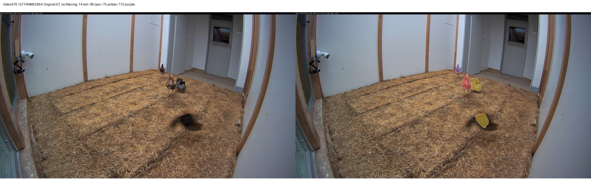
GT00003: GT 75, multiple_substantial_regions, video 1438–1443
Video 1438
Video 1440
Video 1443
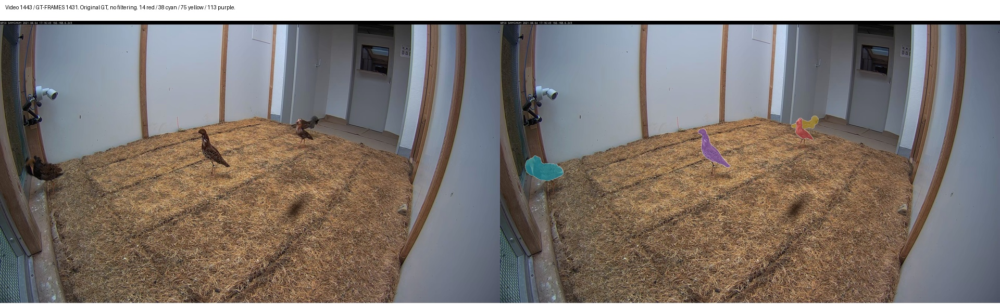
GT00004: GT 75, multiple_substantial_regions, video 1491–1496
Video 1491
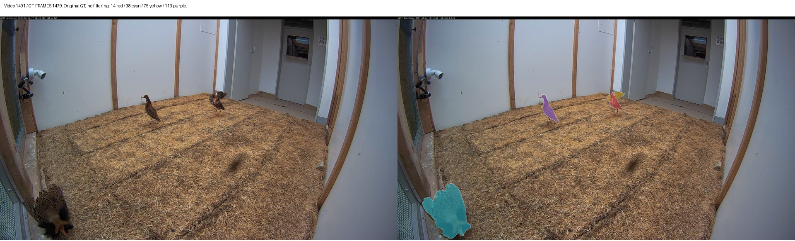
Video 1493
Video 1496
GT00005: GT 75, multiple_substantial_regions, video 800–804
Video 800
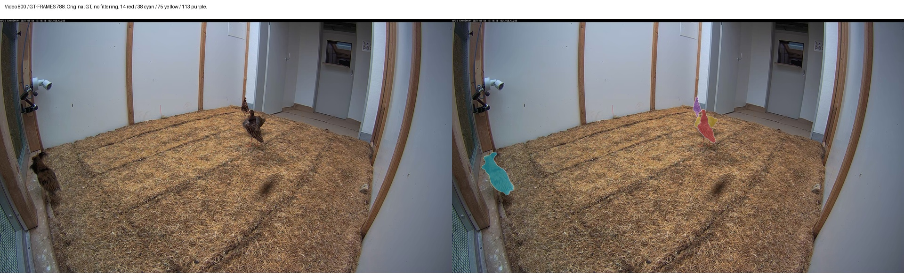
Video 802
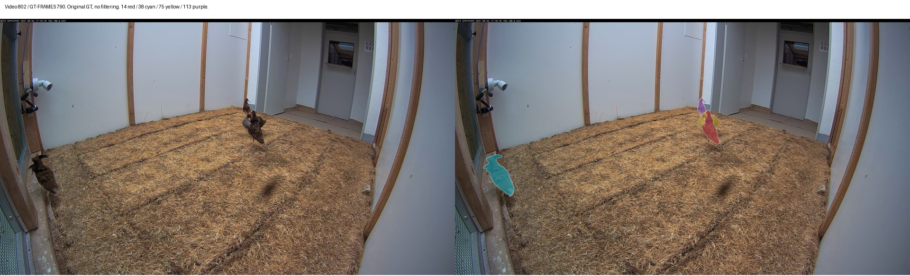
Video 804
GT00006: GT 75, multiple_substantial_regions, video 784–786
Video 784
Video 785
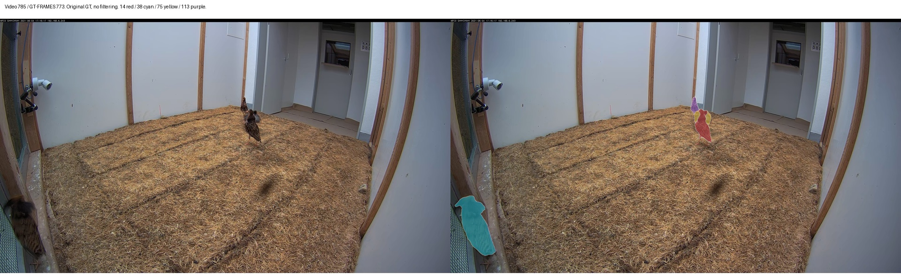
Video 786
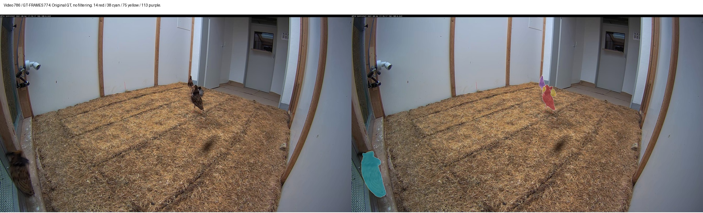
GT00007: GT 75, multiple_substantial_regions, video 163–164
Video 163
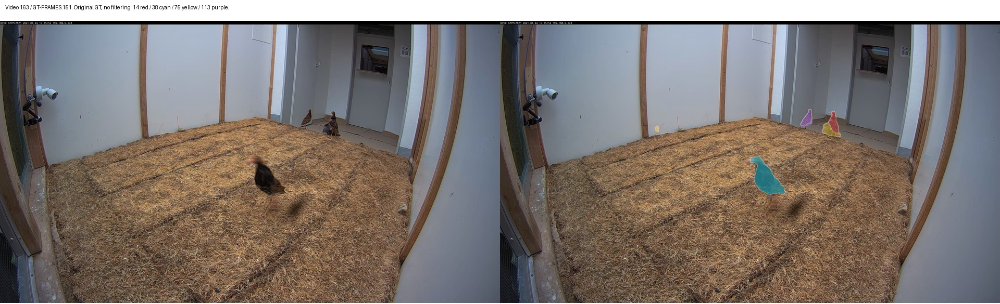
Video 164
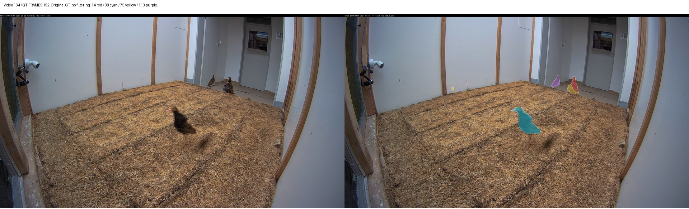
GT00008: GT 75, multiple_substantial_regions, video 687–688
Video 687
Video 688
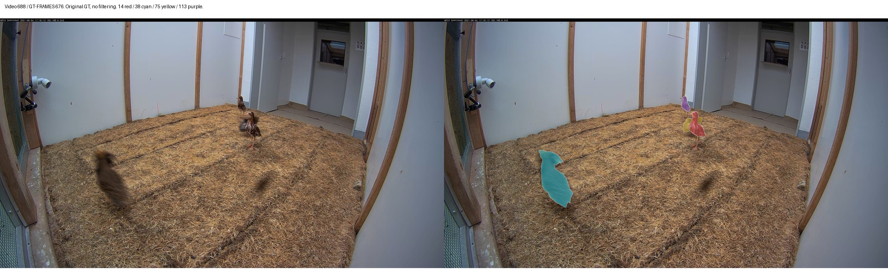
GT00009: GT 113, multiple_substantial_regions, video 2302–2303
Video 2302
Video 2303
GT00010: GT 113, multiple_substantial_regions, video 2306–2307
Video 2306
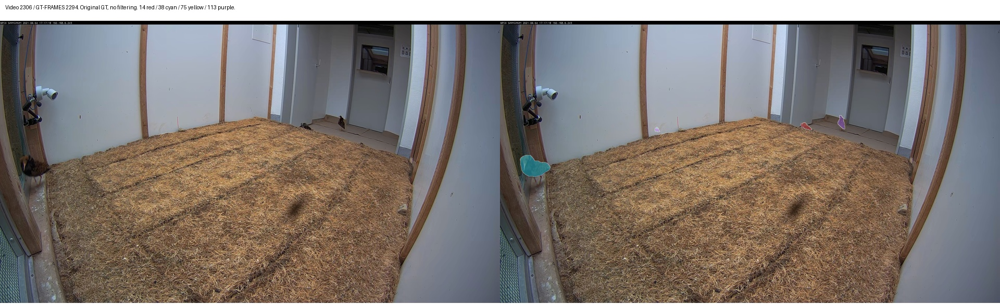
Video 2307
GT00011: GT 75, multiple_substantial_regions, video 131–131
Video 131
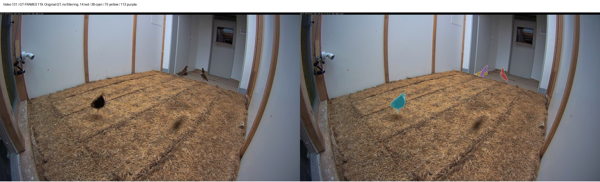
GT00012: GT 75, multiple_substantial_regions, video 166–166
Video 166
GT00013: GT 113, multiple_substantial_regions, video 271–271
Video 271
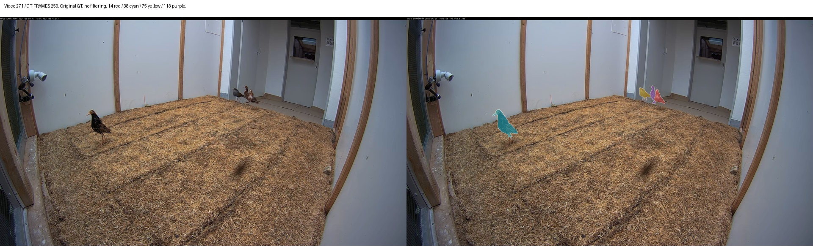
GT00014: GT 75, multiple_substantial_regions, video 925–925
Video 925
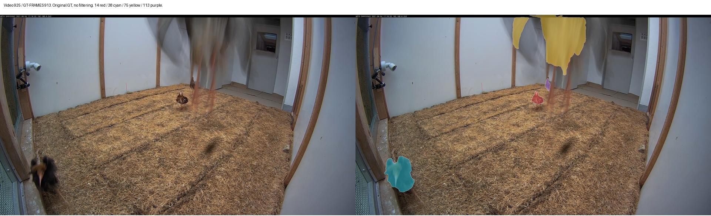
GT00015: GT 75, multiple_substantial_regions, video 1077–1077
Video 1077
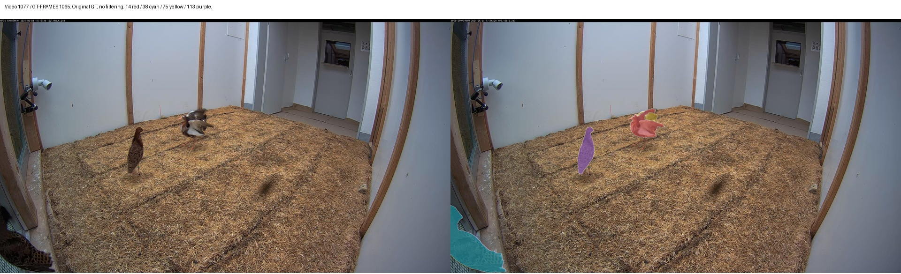
GT00016: GT 75, multiple_substantial_regions, video 1080–1080
Video 1080
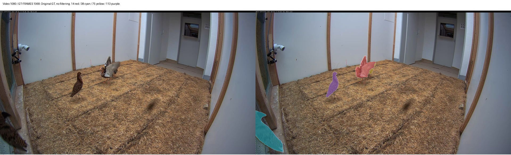
GT00017: GT 75, multiple_substantial_regions, video 1097–1097
Video 1097
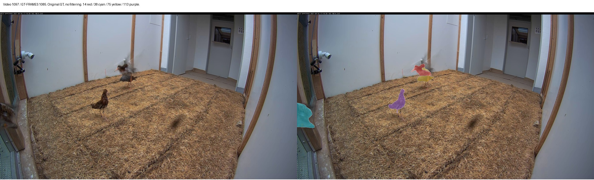
GT00018: GT 113, multiple_substantial_regions, video 1751–1751
Video 1751
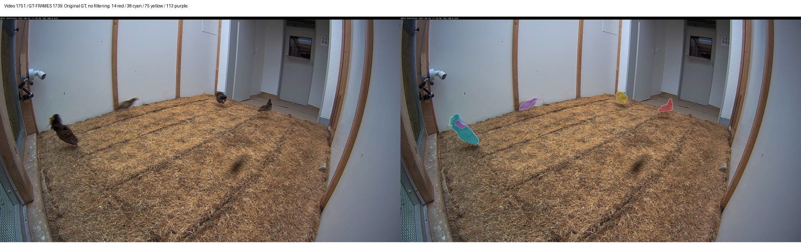
GT00019: GT 75, multiple_substantial_regions, video 1956–1956
Video 1956
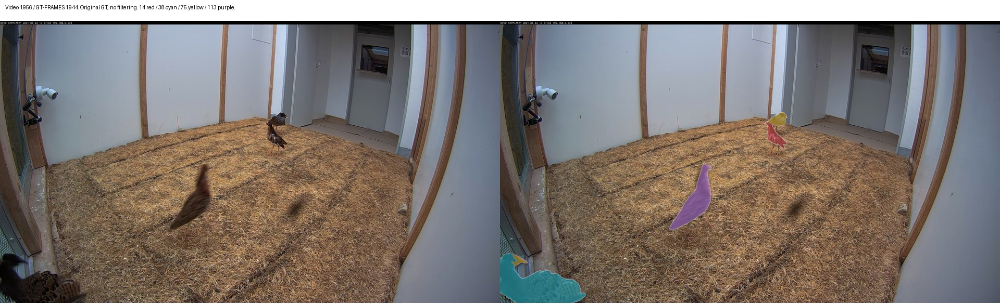
GT00020: GT 75, multiple_substantial_regions, video 1966–1966
Video 1966
GT00021: GT 38, multiple_substantial_regions, video 2118–2118
Video 2118
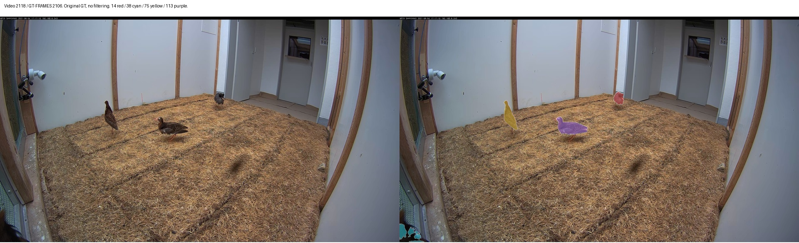
GT00022: GT 113, multiple_substantial_regions, video 2252–2252
Video 2252
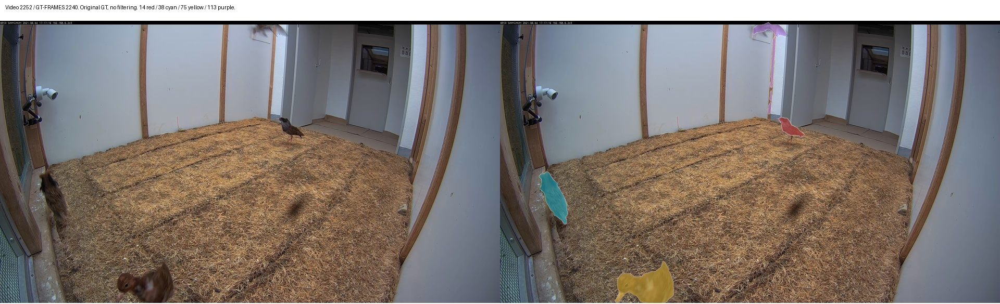
GT00023: GT 113, multiple_substantial_regions, video 2311–2311
Video 2311
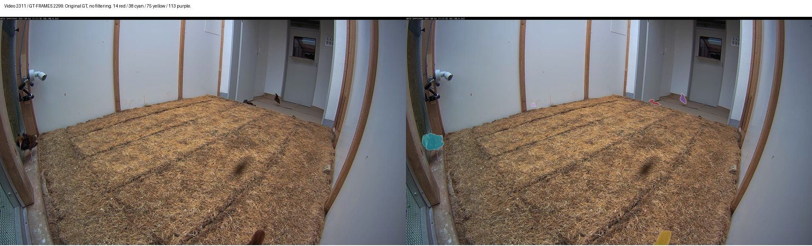
GT00024: GT 75, multiple_substantial_regions, video 2431–2431
Video 2431
GT00025: GT 75, multiple_substantial_regions, video 2906–2906
Video 2906
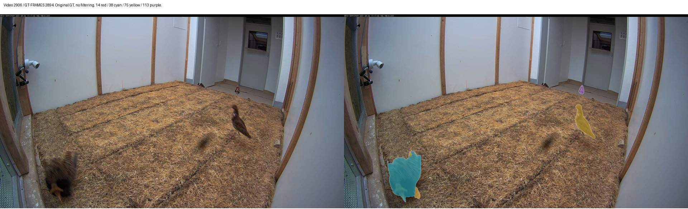
GT00026: GT 75, multiple_substantial_regions, video 3279–3279
Video 3279
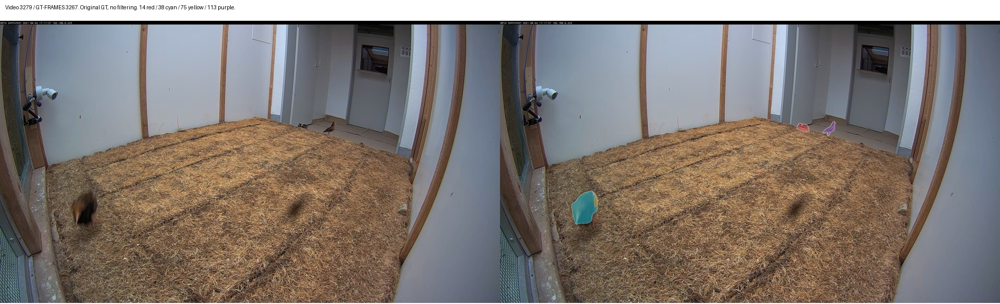
GT00027: GT 75, multiple_substantial_regions, video 3283–3283
Video 3283
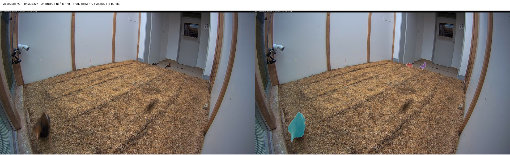
GT00028: GT 14, centroid_jump, video 3414–3417
Video 3414
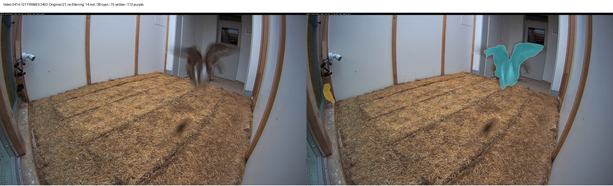
Video 3415
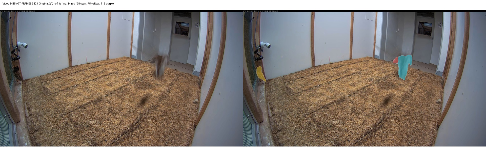
Video 3417
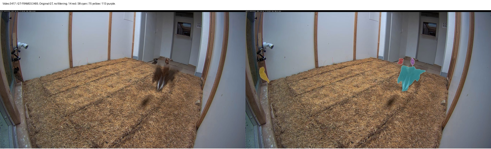
GT00029: GT 14, area_change, video 3414–3417
Video 3414
Video 3415
Video 3417
GT00030: GT 75, centroid_jump, video 921–923
Video 921
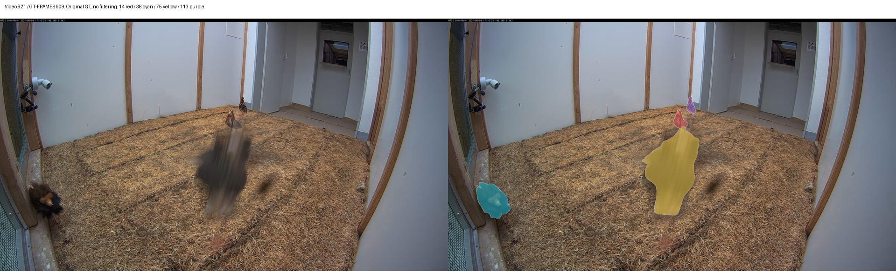
Video 922
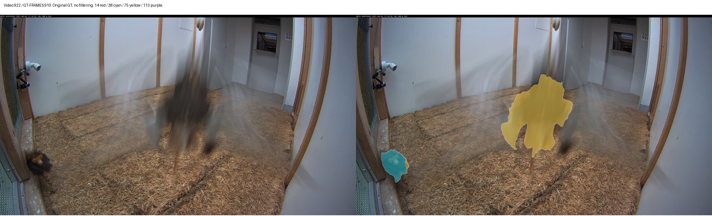
Video 923
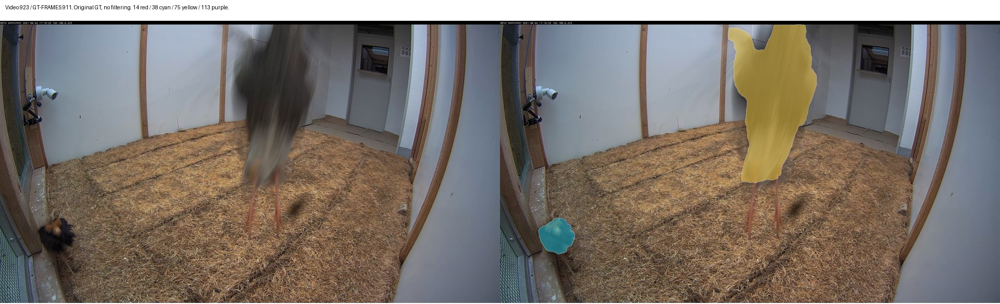